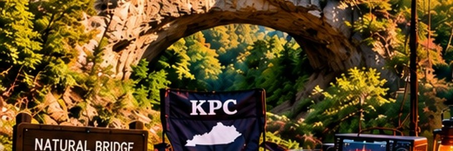
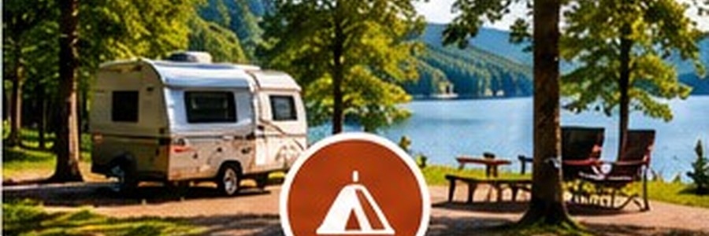
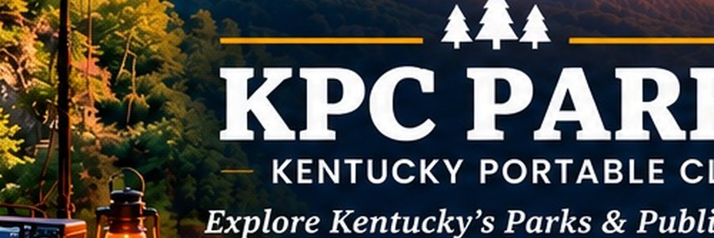
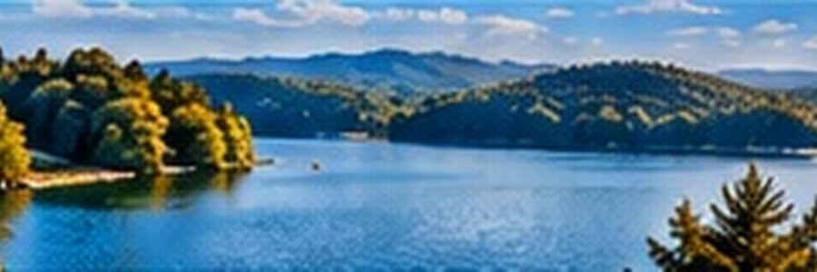

KENTUCKY • OUTDOORS • RADIO
KENTUCKY
PARKS
Explore. Camp. Operate. Repeat. Find the places worth packing the radio for and start planning your next portable adventure.
Places Worth Packing The Radio For
Kentucky is full of places to camp, hike, explore, and get on the air. KPC's Parks page brings the official resources together in one place for planning your next portable adventure.

Plan Your Next Adventure
Use these resources to find a destination, plan your stay, and discover places that fit your portable operating goals.
Kentucky State Parks
Explore the official Kentucky State Parks park finder, including state parks, resort parks, historic sites, and recreation areas.
EXPLORE STATE PARKS →
Camping Reservations
Find official Kentucky State Parks campground reservations for tent and RV camping.
RESERVE A CAMPSITE →
Kentucky Natural Areas
Explore Kentucky's nature preserves, natural areas, wild rivers, and protected lands.
EXPLORE NATURAL AREAS →
POTA Park List
Search portable operating locations and find parks and protected areas for your next activation.
OPEN POTA PARK LIST →Find A Park. Make A Plan.
Turn the destination into an outing — then take the radio with you.
Pick Your Location
Find a Kentucky park, natural area, or protected place that fits the kind of adventure you want.
Take The Radio
Check camping options, plan your route, then use POTA to find portable operating opportunities.
Ready To Explore Kentucky?
KENTUCKY PORTABLE CLUB • EST. 2026
← BACK TO KPC HOME